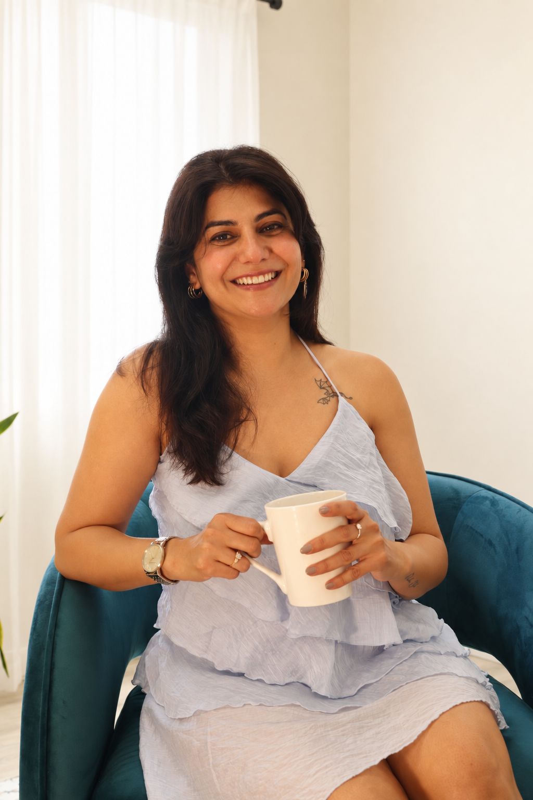
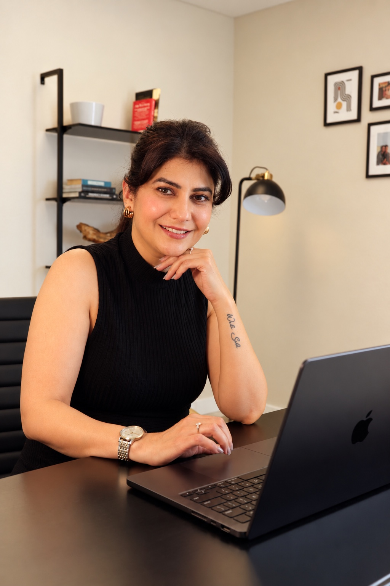
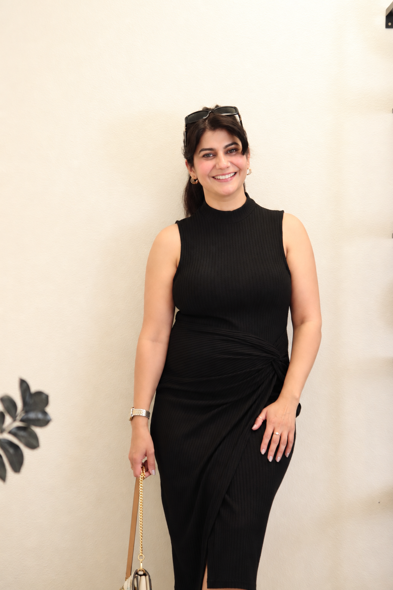
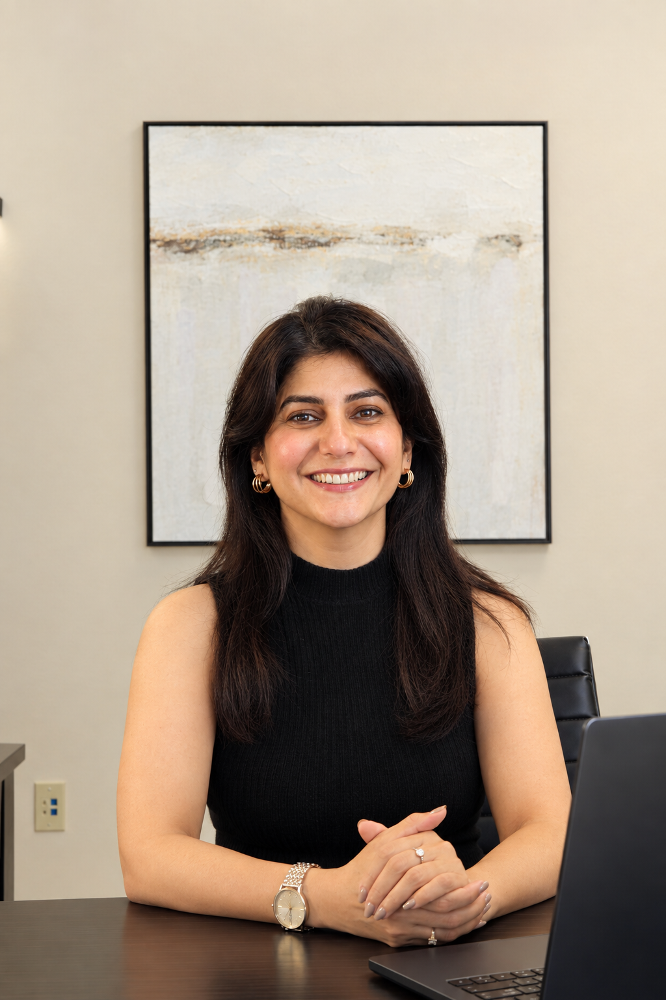
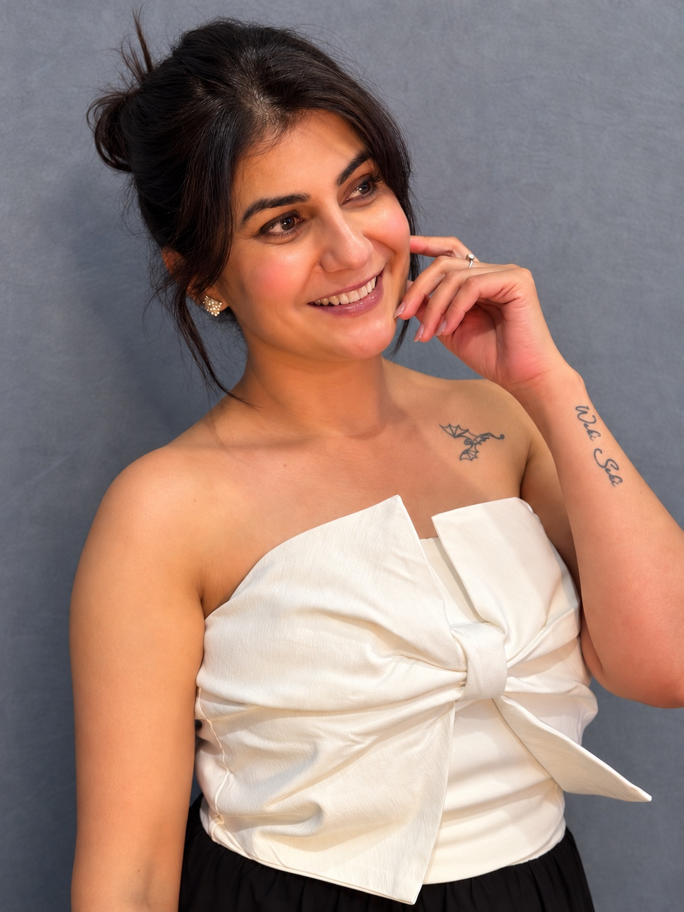
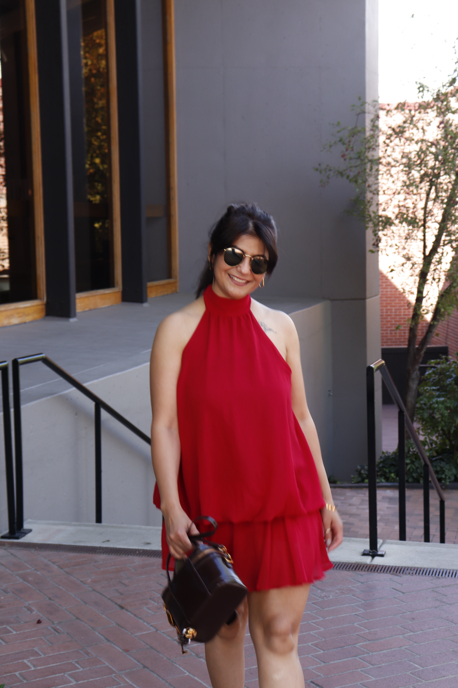

Think · Solve · Build
Technology

Where logic becomes possibility. More than a decade in software engineering taught me to think deeply, solve boldly, and turn complex ideas into meaningful experiences.
Engineer · Entrepreneur · Digital Creator
Moon Sheoran
Bringing together technology, entrepreneurship, personal style, and the real-life moments that help us feel connected.
I’m a software engineer by profession, an entrepreneur at heart, and a creator who finds inspiration in everyday life. After more than a decade in technology, I followed my curiosity into building something of my own and sharing stories that feel honest, positive, and human.
This space is where all those parts of my journey come together—a place for thoughtful ideas, personal style, creativity, laughter, and the everyday experiences that continue to shape who I am.

Technology · Business · CreativityABOUT

I’ve always believed that life doesn’t have to follow just one path.
I started my career in technology, where I spent more than a decade working as a software engineer. It was a world of logic, problem-solving, deadlines, and constant learning—and it shaped a big part of who I am today.
But somewhere along the way, I realized there was another side of me that wanted to create, experiment, and build something of my own.
That curiosity eventually took me beyond the corporate world and into entrepreneurship and content creation. It wasn’t a perfectly planned transition—it was simply me following new ideas, taking chances, learning as I went, and discovering what genuinely excited me.
Think · Solve · Build

Where logic becomes possibility. More than a decade in software engineering taught me to think deeply, solve boldly, and turn complex ideas into meaningful experiences.
Imagine · Create · Care

A dream shaped by curiosity and care—where thoughtful ideas become everyday products designed to bring comfort, confidence, and a little more joy.
Visit MoonBliss.comLive · Laugh · Connect

Real moments, personal style, laughter, and lessons—shared with positive energy to spark a smile, inspire connection, and make everyday life feel less ordinary.
MEDIA
A little corner of my world where I share positive energy, personal style, laughter, and real-life moments—hoping each story brings a smile and helps us feel a little more connected.

Portraits, personal style, travel, family, and the moments worth remembering.
View all photos ↗Favorite reels, collaborations, humor, fashion, and authentic everyday stories.
Fashion · Reels · CollaborationsCONNECT
For collaborations, brand partnerships, and business opportunities.
info@moonbliss.com ↗